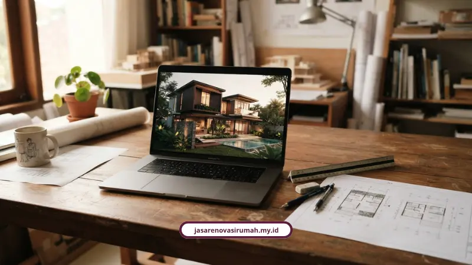

Jasa renovasi rumah Sidoarjo dari kami menyediakan survei lokasi gratis dan desain 3D cepat sebelum proyek dimulai. Prosesnya transparan, mulai dari RAB sampai garansi resmi pascapengerjaan.
Renovasi rumah nggak harus jadi sumber stres kalau prosesnya dipegang tim yang transparan sejak awal, dari survei, desain 3D, sampai serah terima.
Kenapa Warga Sidoarjo Perlu Mikir Ulang Soal Renovasi Rumah?
Rumah di Sidoarjo punya tantangan sendiri. Curah hujan tinggi bikin talang dan atap cepat rewel kalau pemasangannya asal-asalan.
Bapak Fathoni, warga Sidoarjo, sempat membagikan pengalamannya soal pentingnya ketepatan pasang talang dan atap pada rumah baru. Kalau meleset sedikit saja, air hujan bisa nyelonong masuk ke ruang tamu.
Sri Haryani dan Angelina Camela juga cerita hal serupa. Respons cepat dan penanganan profesional itu wajib, soalnya kebocoran yang dibiarkan bisa bikin perabot rumah rusak duluan sebelum sempat diperbaiki.
Belum lagi soal tata ruang yang kadung sempit, atau keluarga yang nambah anggota tapi kamar nggak nambah-nambah. Ini semua alasan kenapa memilih jasa renovasi rumah Sidoarjo yang tepat itu bukan perkara sepele.
Kenapa Harus Pakai Jasa Renovasi Rumah Sidoarjo dari Kami?
Kami sudah 12 tahun lebih wara-wiri di dunia konstruksi dan renovasi, dengan lebih dari 150 proyek yang sudah kelar di berbagai kota di Indonesia. Bukan angka yang kami karang, itu rekam jejak yang bisa dicek.
- Tingkat kepuasan klien tercatat 98 persen
- Didukung 25 lebih tim profesional: arsitek, insinyur sipil, desainer interior, sampai tenaga ahli lapangan
- Material sesuai standar nasional, bukan asal murah
- Anggaran transparan, tanpa biaya siluman di tengah jalan
- Garansi pekerjaan resmi, bukan janji lisan doang
Kalau butuh solusi menyeluruh, mulai dari jasa arsitek, kontraktor rumah tinggal, kontraktor bangunan komersial, desain interior, sampai konsultasi perizinan IMB/PBG, semuanya bisa dicek langsung di halaman layanan kami.
Apa Untungnya Survei Gratis dan Desain 3D Cepat?
Untungnya jelas, pemilik rumah nggak perlu keluar uang di tahap awal dan sudah bisa membayangkan hasil akhir renovasi sebelum tukang pertama kali pegang palu.
Tim teknis kami datang langsung ke lokasi rumah di Sidoarjo, mengukur tapak, menganalisis kondisi struktural, sekaligus mendengarkan keluhan pemilik rumah. Semua ini tanpa dipungut biaya sepeser pun.
Setelah itu, arsitek menyusun desain 3D cepat sebelum pembongkaran dilakukan. Jadi pemilik rumah bisa lihat dulu bentuk akhir tata ruang, fasad, sampai interior, biar nggak ada drama revisi di tengah jalan gara-gara salah paham.

Proses ini juga makin jelas kalau Anda melihat alur kerja yang kami terapkan pada artikel Tahapan Proses Kerja Renovasi Rumah Surabaya, karena pola survei, desain, dan serah terima di banyak wilayah Jawa Timur sebenarnya serupa.
Baca Juga: Tahapan Proses Kerja Renovasi Rumah Surabaya
Layanan Renovasi Apa Saja yang Kami Tangani di Sidoarjo?
Kami menangani hampir semua jenis kebutuhan renovasi, dari yang kecil sampai yang bikin rumah berubah total. Untuk kebutuhan yang lebih spesifik, Anda bisa cek lagi daftar layanan kami agar skema pekerjaan sesuai dengan target anggaran dan kebutuhan ruang.
- Renovasi parsial: dapur (kitchen set), kamar mandi, perbaikan atap/talang/galvalum, pembaruan fasad depan
- Renovasi total: rombak menyeluruh rumah lama biar kembali kokoh dan modern
- Penambahan ruangan atau lantai: naik jadi 2 sampai 3 lantai dengan perhitungan struktur yang aman
Kebetulan soal memaksimalkan lahan sisa yang sempit, kami juga pernah bahas panjang lebar lewat kasus cara menghitung estimasi biaya renovasi rumah Malang, yang polanya juga relevan buat rumah tipe kecil di Sidoarjo. Jika ingin membandingkan kisaran anggaran area lain, baca juga Biaya Renovasi Rumah Surabaya per M2 2026.
Berapa Kisaran Biaya Renovasi Rumah di Sidoarjo?
Sebagai gambaran awal, estimasi harga borongan pengerjaan dari lantai 1 di area Sidoarjo mulai dari Rp3.000.000 per meter persegi. Itu sudah termasuk pondasi batu kombong, struktur beton bertulang, bata merah, atap galvalum, sampai penutup lantai granit atau keramik.
Biar pemilik rumah nggak was-was soal uang, kami menerapkan sistem pembayaran bertahap alias termin, bukan bayar lunas di depan.
- DP atau Termin I: 20 sampai 30 persen, dibayar setelah tukang dan material tiba di lokasi
- Termin II dan III: menyesuaikan progres fisik, misalnya saat capaian 55 persen dan 80 sampai 85 persen
- Pelunasan: setelah pekerjaan rampung 100 persen dan sudah diserahterimakan
Semua proyek juga dilindungi Surat Perjanjian Kerja bermaterai plus jaminan garansi retensi pemeliharaan pascakonstruksi. Soal detail legalitas dan isi SPK yang kami pakai, sudah kami uraikan lengkap dalam pembahasan legalitas kontraktor dan SPK yang kami terapkan di seluruh proyek Jawa Timur.
Testimoni klien juga jadi bukti kalau sistem ini jalan. Ibu Sinta dari Surabaya bilang tim arsitek kami banyak kasih masukan desain yang bikin rumahnya terasa lebih luas dan nyaman. Bapak Andi dari Malang menyebut proses renovasinya rapi dan komunikasi tim selalu jelas. Bapak Reza dari Bekasi mengapresiasi pengerjaan yang tepat waktu sesuai kontrak, lengkap dengan garansi.
Bagaimana Aturan Renovasi Rumah Subsidi di Sidoarjo?
Aturannya jelas, rumah subsidi dilarang direnovasi besar-besaran dalam 5 tahun pertama sejak akad kredit.
- Diperbolehkan: menutup sisa lahan belakang untuk dapur, membuat pagar demi keamanan, memperbaiki kerusakan minor seperti atap atau keramik
- Dilarang keras: mengubah total fasad depan, menambah lantai 2 secara permanen, atau mengalihfungsikan rumah jadi tempat usaha sebelum masa kredit 5 tahun
Setiap renovasi bangunan baru atau perombakan struktur juga wajib memperhatikan izin daerah, seperti Perda Kabupaten Sidoarjo No. 4 Tahun 2012, biar nggak kena sanksi administratif sampai perintah pembongkaran.
Wilayah Mana Saja yang Kami Layani di Jawa Timur?
Kami melayani Sidoarjo secara menyeluruh, dari Kecamatan Kota, Waru, Gedangan, Candi, sampai Krian, dan juga area sekitarnya seperti Surabaya dan Gresik.
Cakupan layanan kami sebenarnya lebih luas lagi. Detail lengkapnya, termasuk karakteristik tiap kota dan gambaran biaya per wilayah, sudah kami rangkum di pembahasan wilayah layanan renovasi kami di Jawa Timur.
Saatnya Wujudkan Rumah Idaman di Sidoarjo
Renovasi rumah nggak harus jadi sumber stres kalau prosesnya dipegang tim yang transparan sejak awal, dari survei, desain 3D, sampai serah terima.
Kalau Anda di Sidoarjo sedang mempertimbangkan renovasi, cek dulu ragam layanan kami dan hubungi tim kami di WhatsApp 0889-8964-3555 untuk klaim survei lokasi gratis dan konsultasi desain 3D.
FAQ Seputar Jasa Renovasi Rumah Sidoarjo

Naura Regyna Putri
Penulis Profesional & Praktisi Konstruksi
Naura Regyna Putri adalah seorang penulis profesional yang memiliki ketertarikan mendalam pada dunia arsitektur dan konstruksi. Dengan pengalaman bertahun-tahun mengamati tren renovasi rumah, ia aktif membagikan panduan praktis, tips RAB, dan wawasan seputar material bangunan untuk membantu pemilik rumah mewujudkan hunian impian mereka dengan anggaran yang efisien.